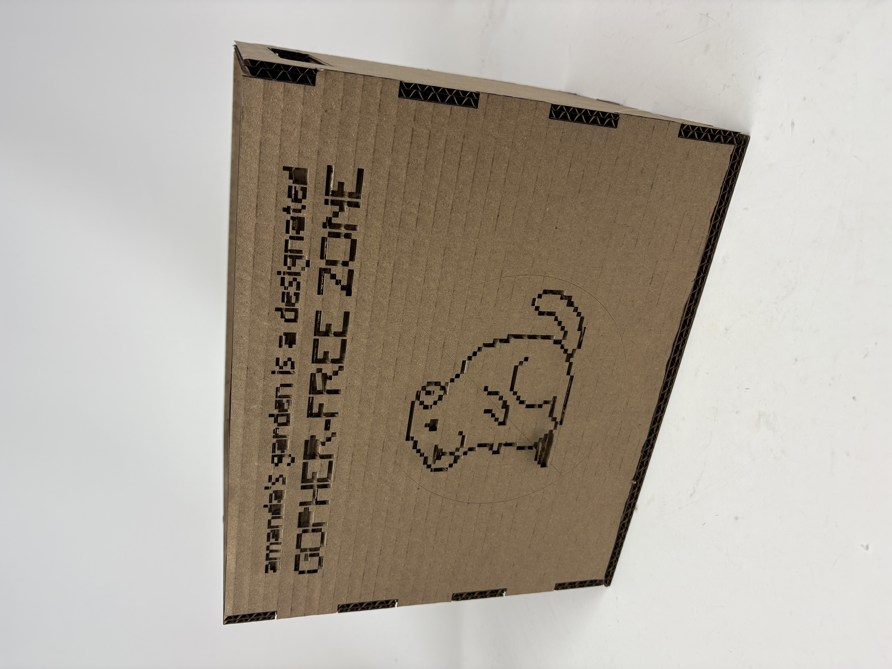
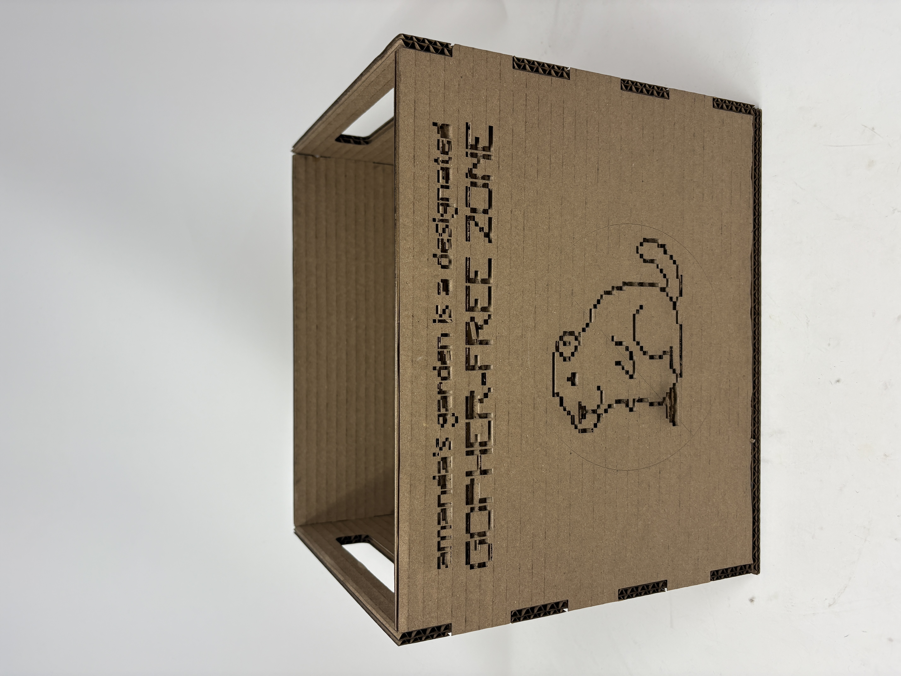
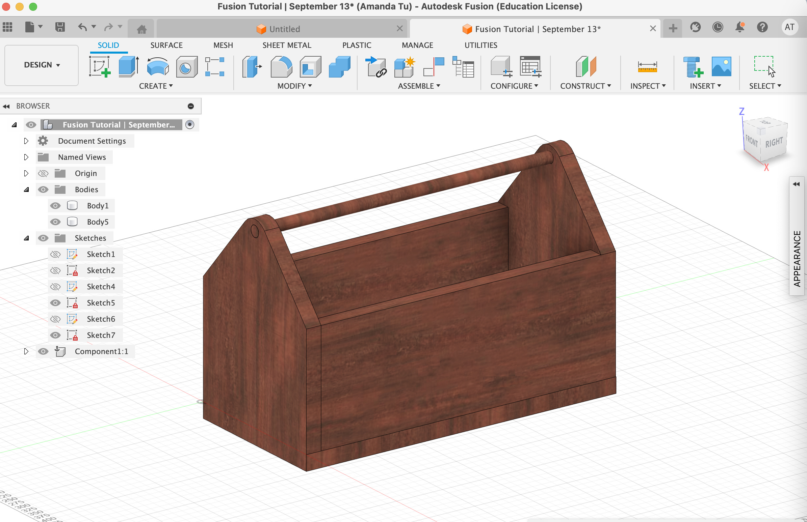
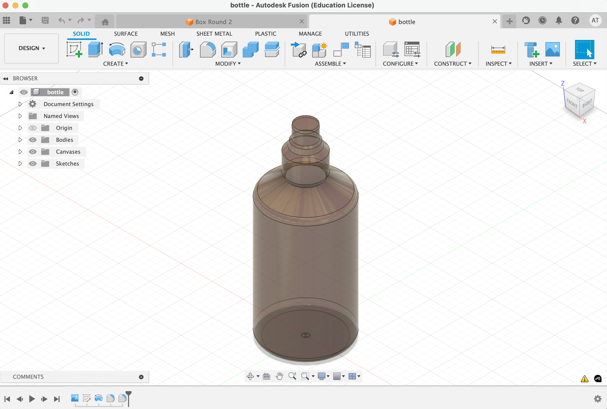
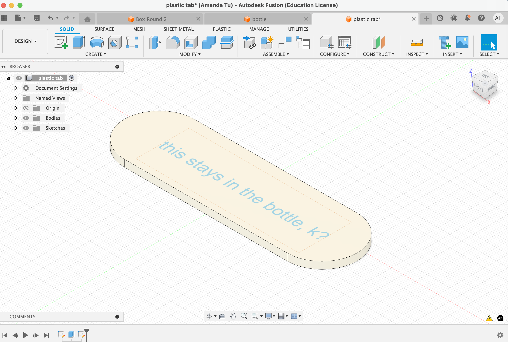
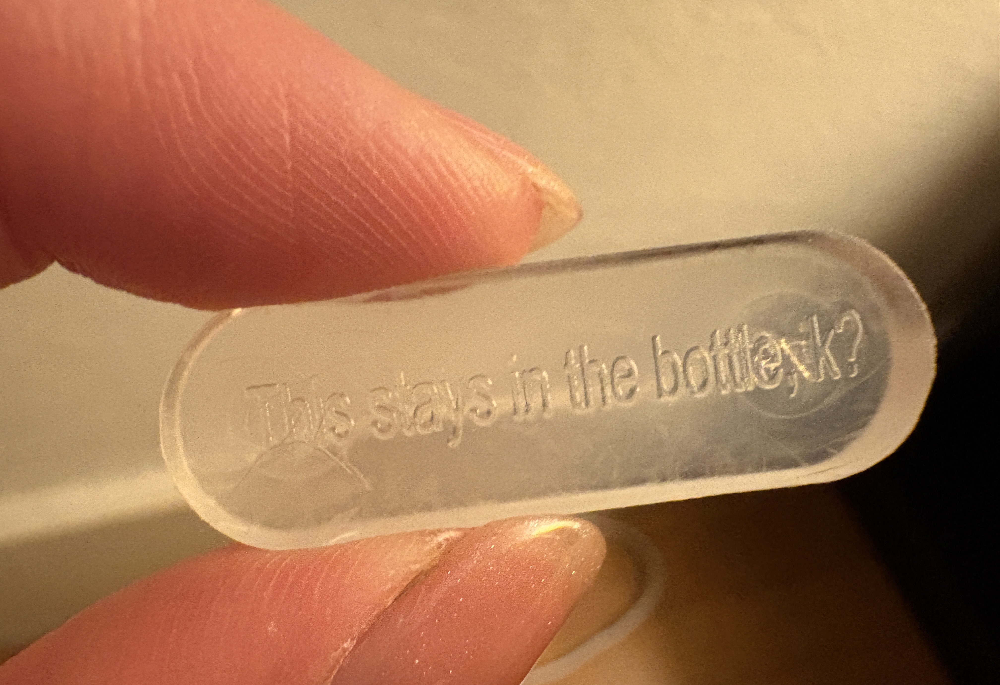

<div class="textcontainer">
<p class="margin"> </p>
<h1>🎨 Week 2: 2D Design & Cutting 🎨</h1>
<br></br>
<h2>Part I: Make a Box</h2>
<br></br>
<p>I wanted to create a box that would both contain my materials for PS 70 this semester, alongside serving as a prototype for a toolbox I can use in my garden. I spent most of the past summer building and tending to a community garden plot I have at Stanford. The garden is continuously aggrieved by local gophers, so I wanted the visual design of my box to emphasize my feelings about rodent encroachment on my vegetables.</p>
<img src="gopher illustrator.png" alt="Gopher Illustrator" class="center">
<p style="text-align: center;"><em>My gopher illustration in Illustrator</em></p>
<br></br>
<p>I designed a simple finger joint press fit box template with&nbsp;slot handles in Fusion, and then created the&nbsp;visuals I wanted to engrave in Illustrator. My plan was to layer the two elements on top of each other in Rhino when I went to laser cut.</p>
<img src="box fusion.png" alt="Box Fusion" class="center">
<p style="text-align: center;"><em>My box template in Fusion</em></p>
<br></br>
<p>Ultimately, the design of the box itself gave me no issues. I did struggle a bit with the engraving design: something about the way I had traced the visual elements with Illustrator didn't translate neatly to Rhino. I ended up having to explode all the segments and manually hatch each one, which was very time-consuming. The cross-out symbol in my illustration also did not render properly.</p>
<img src="IMG_3644.jpeg" alt="Hatching" class="center">
<p style="text-align: center;"><em>Struggling to hatch :(</em></p>
<br></br>
<p>I was pleased with my box overall: the&nbsp;size and shape are appropriate for what I need this semester, and the press fit elements worked with only minimal hot glue reinforcement. Moving forward, I am eager to continue playing with the Illustrator &lt;&gt; Rhino workflow, as I anticipate this being an important component of my final project.</p>


<p class="margin"> </p>
<div class="flexrow">
<a id="btn" href="amanda box files.zip" download>My Box Files
</a>
</div>
<p class="margin"> </p>
<p>&nbsp;</p>
<br></br>
<h2>Part II: Fusion 360 Tutorial</h2>
<br></br>

<p style="text-align: center;"><em>The output of my Fusion tutorial: a mahogany toolbox!</em></p>
<p>For my Fusion 360 tutorial, I searched for an educational YouTube page that I would find easy to follow, with instructions on many different Fusion functionalities so I could continue to learn skills relevant to my different projects. I ended up following <a href="https://www.youtube.com/watch?v=Izh99EnGLGw">this tutorial</a>, which I found extremely helpful. This is also the first in a multi-part series, which I plan to keep watching and following along with to build my comfort with CAD modelling.</p>
<p>This video also has the added benefit of being directly relevant to my "Make a Box" assignment this week, as my goal is to create a box that looks like a tool chest!</p>
<p class="margin"> </p>
<div class="flexrow">
<a id="btn" href="091325_Amanda Tu_Fusion Tutorial.f3d" download>Fusion Tutorial Files
</a>
</div>
<p class="margin"> </p>
<br></br>
<h2>Part III: Fusion 360 Modelling</h2>
<p>I picked two different household objects with highly varied shapes to practice a diverse range of skills in Fusion:</p>
<p><strong>Body oil bottle:</strong> Used <a href="https://www.youtube.com/watch?v=DfAfxae8aRc">this tutorial</a> to&nbsp;get up to speed using the Canvas, Fit Point Spline, and Rotate tools in Fusion. For a shape with this many nuances that were challenging to measure, it was very helpful to be able to upload a reference image and reconstruct the precise curvatures of the bottle. I want to keep refining this by making a separate construction for the bottle cap and adding some nuances of the design that I struggled to create (e.g., capturing the shape of the nozzle and the interior tube portion).</p>

<img src="IMG_3843.png" alt="Bottle Photo" class="center">
<br></br>
<p><strong>Plastic tab from vitamin bottle (<a href="https://ritual.com/articles/meet-our-minty-tab?srsltid=AfmBOorkgAJo4J0St1wwNrOMQZXiDWQvLgZwbjW6smFMz6xTYH2M3LcL">weird, I know!</a>):</strong> This shape was more straightforward. I wanted to practice using the Appearances tool to make my CAD models more reflective of reality (this particular item is made from a flexible translucent plastic) and the Text feature under the Sketch tool to add text to my models.</p>


<p class="margin"> </p>
<div class="flexrow">
<a id="btn" href="Fusion Practice Files.zip" download>Fusion Practice Files
</a>
</div>
<p class="margin"> </p>
</div>